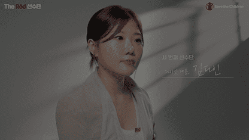

따뜻한 실 한 땀, 한 땀이 모여
신생아에게 전달된 따뜻한 온기
지난 15년간 진행된 세이브더칠드런 신생아 살리기 모자뜨기 캠페인으로 990,092명의 따뜻한 마음과 손길이 모인 2,251,056개 모자는 신생아가 저체온증에 걸리지 않도록 생명을 지켰습니다.
하지만
전 세계 하루 동안
사망하는 산모 수
800명
이 중 산모 사망의 95%는
개발도상국에서 발생
출처 : WHO 세계보건기구, 2020
산모가 사망하는
가장 큰 이유는
빈곤으로 기본적인 진료조차
받지 못하기 때문에
하루에 수백 명의 아기가
생명을 잃고 있습니다.
세이브더칠드런은
소중한 생명을 포기할 수 없기에
매년
한 생명을 살리는
따뜻한 움직임을
시작합니다.
이 여정을
함께 만들어갈 사람들
신생아를 살리는
더 레드 선수단이
되어주세요.
신생아를 살리는 따뜻한 움직임

하시시박 입니다.
“ 지금 이 캠페인을 보는 많은 분들과 같은 마음으로
동요했고 망설였고 또 살펴 더듬어 봤어요.
시작을 하지 않으면 아무것도 바뀌지 않는다는 것을
아이들을 키우면서 매 순간 느끼고 있어요.
그냥 세상이 조금 더 나아지면 좋겠다는 바람,
그것에서 시작하는 거예요. ”
남궁인 입니다.
“ 세이브더칠드런 앰배서더로서 실제 현장을 눈으로 봤을 때, 많은 감정과 생각이 교차했어요. 충분히 풍족해진 현재 우리의 삶과 대비가 많이 됐죠.
그중에서도 신생아에게 집중한다는 것은
세이브더칠드런이기에 할 수 있는 일이라고 생각해요.
세상에서 가장 값진 존재를 절대 포기하지 않는 힘.
끝까지 함께하고 싶었습니다. ”
11/22(금) 오픈 예정
김다인 입니다.
“ The Red 선수단 캠페인에 동참한 이유요?
기쁨을 나누고 싶다는 생각이 들었어요.
탄생의 기쁨이 얼마나 큰지 알기 때문에
저보다 열악한 환경에 놓인 산모들이
꼭 그 기쁨을 누릴 수 있길 바랐어요.
같은 마음을 갖고 있는 분들이 계시다면
소중한 생명을 위한 가치 있는 행동에
함께 참여해 주셨으면 좋겠어요. ”
11/22(금) 오픈 예정
박문수 입니다.
“ 더 많은 사람들이 동참했으면 좋겠다고 생각했어요.
저 혼자만의 진심으로 시작했지만,
신생아를 살릴 수 있다는 생각이
제 삶에 꽤나 큰 자부심이 되거든요.
삶의 많은 부분에서 시각이 바뀌기도 하고요.
이 긍정적인 힘을 함께 느끼고 싶었어요. ”
한 명의 신생아 를 살리는 여정
-
엄마가 생명을 품고,
아이를 기다리는 10개월의 여정 -
건강하게 태어난 내 아이를
마주하는 경이로운 순간 -
각종 감염으로부터 아이를 지키고
산모의 회복을 돕는 2개월의 여정
선수단의 시작을 함께하는 선수단 키트와
건강하게 태어난 신생아 사진을 전달해 드립니다.
정기후원 6개월

후원자님과 아이의 1:1 매칭은 아니며,
정기후원을 해주시는 후원자님께 보내드립니다.
지금 신생아를 살리는